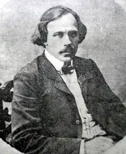
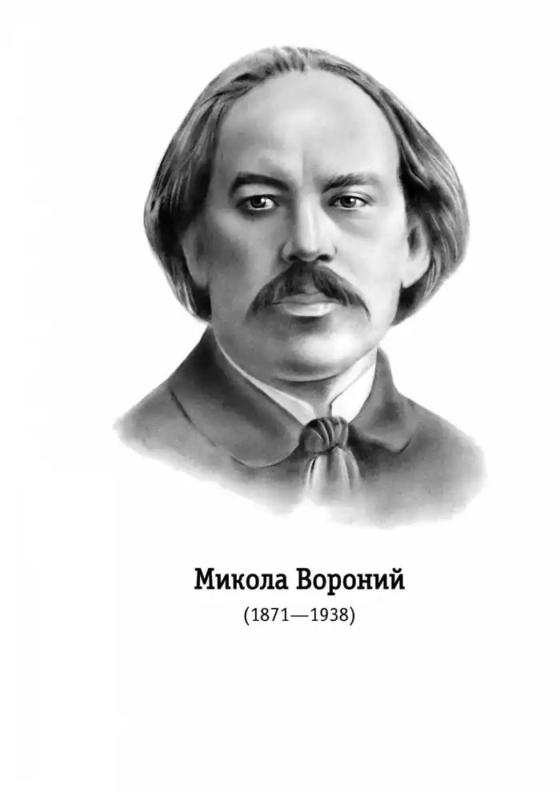

Микола Вороний
(6 грудня 1871 — 7 червня 1938)
Вороний Микола Кіндратович (псевдонім і криптонім — Арлекін, Віщий Олег, Homo, Sirius, Кіндратович, Микольчик, М.В., К-ич М, М-У-ко та інші; 24.ХІ (6.ХІІ) 1871, Катеринославщина (тепер Дніпропетровщина) — 7 .VI. 1938) — український поет, театрознавець, перекладач. Народився в сім'ї ремісника. Батько — К. П. Вороний походив з кріпаків, мати — О. Д. Колачинська — з роду освітнього діяча 17-18 століття, ректора Київської академії П. Колачинського. Навчався в Харківському реальному училищі, пізніше — в Ростовському реальному училищі, звідки був виключенний за зв'язки з народниками, читання і поширення забороненої літератури. Три роки перебував під наглядом поліції із забороною вступати до вищих навчальних закладів Росії. Продовжував навчання у Віденському і Львівському університетах (філософський факультет). У Львові зблизився з І. Франком, який справив великий вплив на формування його світогляду, літературно-естетичних поглядів. Працював бібліотекарем і коректором Наукового товариства імені Шевченка, режисером українського театру товариства "Руська бесіда", в редакції журналу "Життє і слово", де вів рубрику "Вісті з Росії". Допомагав І. Франкові у виданні газети "Громадський голос" і "Радикал", деякий час був неофіційним редактором журналу "Зоря". З 1897 — актор труп М. Кропивницького, П. Саксаганського, О. Васильєва та інших, 1901 залишив сцену і служив в установах Єкатеринодара, Харкова, Одеси, Чернігова. В 1910 році оселився в Києві, працював у театрі М. Садовського, викладав у театральній школі. Жовтневої революції Вороний не сприйняв і в 1920р. емігрував за кордон. Жив у Варшаві, де зблизився з польськими письменниками Ю. Тувімом і Л. Стаффом, невдовзі переїхав до Львова. Викладав в українській драматичній школі при Музичному інституті імені М. Лисенка, деякий час був директором цієї школи. Після повернення в Україну (1926) вів педагогічну і театрознавчу діяльність. Перші поетичні твори написав ще навчаючись у Харківському реальному училищі. Друкуватися Вороний почав у 1893 (вірш "Не журись, дівчино"). Публікувався в періодичних виданнях "Зоря", "Літературно-науковий вістник", "Засів", "Дзвін", "Сяйво", "Рада", в антологіях, збірниках, декламаторах початку 20 століття: "Акорди", "Українська муза", в альманахах "Складка", "За красою", "Дубове листя", "На вічну пам'ять Котляревському", "Багаття" та інших. У 1901 в "Літературно-науковому вістнику" опублікував відкритий лист програмного характеру, де закликав письменників до участі в альманасі, "який змістом і формою міг би хоч трохи наблизитись до нових течій і напрямів сучасних літератур". У виданому ним альманасі "З-над хмар і долин" (Одеса, 1903) поряд з модерними поезіями були представлені твори поетів, що гостро виступали проти декадансу, "чистого мистецтва" та інших течій у літературі і мистецтві, — І. Франка, П. Грабовського, Лесі Українки, М. Старицького, В. Самійленка та інших. Перша збірка Вороного "Ліричні поезії" вийшла 1911 у Києві. Вірші її були сповнені музикальності, свіжості образів. У наступній збірці "В сяйві мрій" (1913) Вороний іде шляхом певної естетизації, самозамилування ліричного героя. Поезія Вороного дедалі глибшає змістом, порушує загальносвітові теми, філософські питання ("Мандрівні елегії"). Він одним з перших вводить у лірику тему міста, переймає ряд традиційних мотивів європейської поезії, де протиставляється поетична одухотвореність і буденність, утверджує нестримне прагнення людини до краси, світла, осягнення космосу ("Ікар", "Сонячні хвилини"), розкриває трагізм духовної самотності (цикл "Осокорі"). Орієнтована передусім на читача, вихованого на кращих зразках світової літератури, поезія Вороного була, за висловом О. І. Білецького, "явище високої художньої цінності" (В книзі: Вороний Микола. Поезії. К., 1929, с.32). Творчість Вороного знаменує розрив з народницькою традицією, їй притаманна різноманітність метричних форм і строфічних побудов. Тяжіння до модернізму не перешкоджало Вороному писати твори, пройняті щирою любов'ю до народу, шаною до його кращих синів ("Краю мій рідний", "Горами, горами", "Привид", вірші, присвячені Т. Шевченкові, І. Франкові, М. Лисенкові). Водночас створює поезії, в яких висміює національну обмеженість, псевдопатріотизм, його антигуманістичну, аморальну сутність ("Мерці", "Молодий патріот", "Старим патріотам"). Вороному належить ряд мистецтвознавчих ("Пензлем і пером") і театрознавчих розвідок ("Театральне мистецтво й український театр", 1912; "Театр і драма", 1913, в якій виступає прихильником системи Станіславського; "Михайло Щепкін", 1913; "Український театр у Києві", 1914; "Режисер", 1925; "Драматична примадонна", 1924 — про сценічну творчість відомої актриси Л. Ліницької). Вороний — автор ряду літературознавчих статей, театральних рецензій. У спадщині Вороного значне місце посідають переклади й переспіви з інших літератур. Репресований у 1934 році. Розстріляний 7 червня 1938р. Архів Вороного зберігається в Інституті літератури імені Т. Г. Шевченка АН України. Василь ЯРЕМЕНКО Українське слово. — Т. 1. — К., 1994.